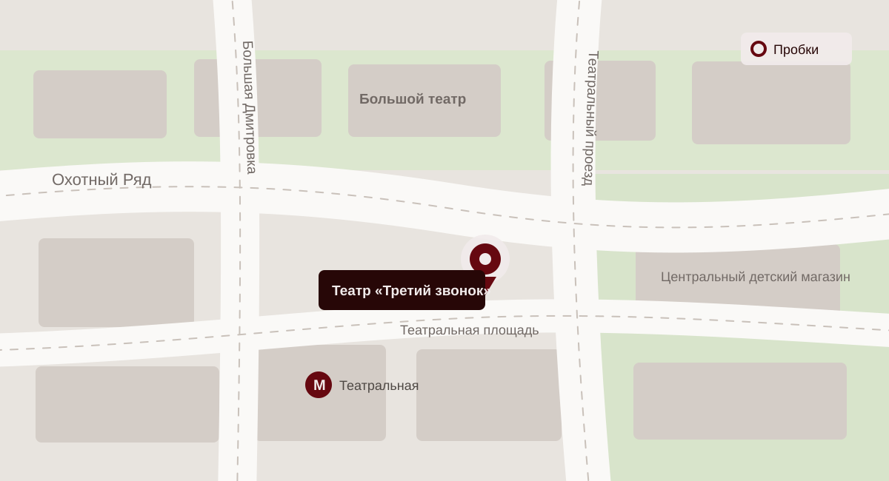

Контакты
Свяжитесь с театром по вопросам билетов, возврата, доступности зала и посещения спектаклей.
Театр «Третий звонок»
Москва, Театральный переулок, 3- Телефон
- +7 495 000-00-03
- Электронная почта
- hello@third-bell.example
- Касса
- Ежедневно, 12:00–20:00
- Бронирование
- Ежедневно по телефону и через форму сайта
Как нас найти
Театр находится в центре Москвы, недалеко от станций метро «Театральная» и «Охотный Ряд».
Москва, Театральный переулок, 3
Ежедневно, 12:00–20:00
+7 495 000-00-03
Построить маршрут

Открыть в Яндекс КартахПеред посещением
Приходите заранее, чтобы спокойно пройти контроль, оставить верхнюю одежду и занять места до третьего звонка.
Как добраться
Ближайшая станция метро: «Театральная». Если потребуется помощь с маршрутом, позвоните администратору.
Доступность
Сообщите о специальных требованиях при бронировании. Сотрудники подготовят удобный вход и места в зале.